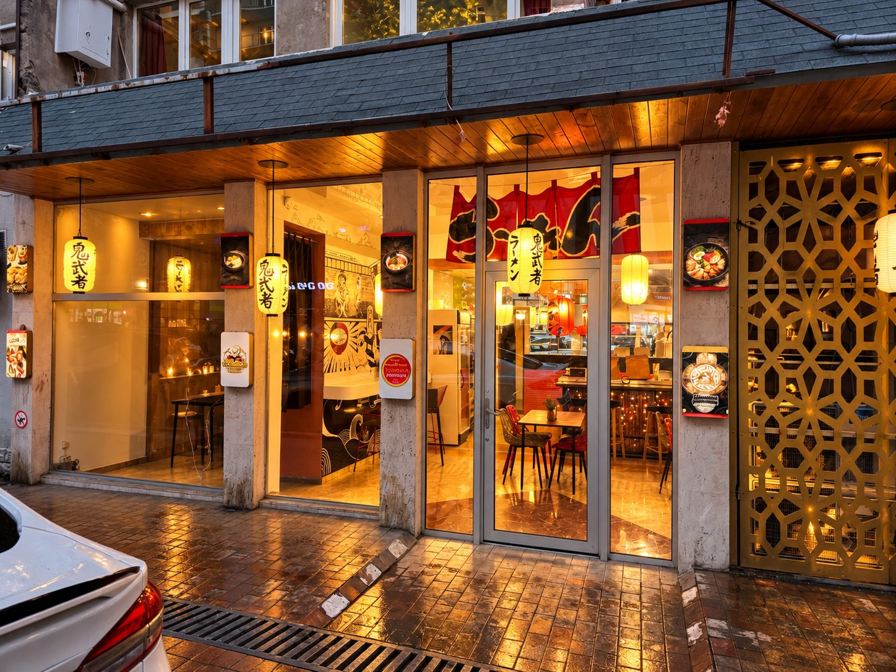

ジョージアの会社設立と法人口座の開設を、日本語で代行します
- 会社設立＋法人口座（日本から郵送でリモート代行）200,000円〜
- 会社設立＋法人口座（トビリシで現地同行）120,000円〜
- 設立後の毎月の申告月 40,000円〜
- まずは相談（LINE）初回30分 無料
1 ・ お悩みこんなことで困っていませんか？
- 会社は作れても、法人の銀行口座が開けないと事業が始められない
- 非居住者の口座開設は、年々厳しくなっていると聞く
- 日本にいながら、海外で会社を作れるのか分からない
- 作ったあとの毎月の申告が、ジョージア語でできるか不安
2 ・ 解決ジョージアは、会社づくりが早い国
- 登記は申請の翌営業日に終わり、税務の番号も同時に出ます
- 委任状を郵送すれば、ジョージアに来なくても登記まで進められます
- 大手のTBC BankとBank of Georgiaのどちらでも、法人口座を申請できます
- 会社の利益は、配当などで外に出すまで課税されません
3 ・ 実績自分たちの会社で、同じ手続きをしました

- 会社
- OMURICELAND LLC をトビリシで設立（2026年9月10日 登記）
- 法人口座
- TBC Bank で開設（2026年9月）
- お店
- Japan Food Hub（1 Davit Gamrekeli St）でオムライス店を営業中・毎日13:00〜24:00
- 毎月の申告
- 現地の会計士と組んで、自分たちも毎月申告しています
4 ・ 流れ相談から開設後まで（目安3〜6週間）
- LINEで無料相談（30分）：事業の内容、会社の名前、お金の流れを伺います
- 書類：英文の委任状をお送りします。日本の公証役場で署名・認証し、原本をEMSで送っていただきます
- 手続き：トビリシで翻訳・公証・登記をして、TBC BankかBank of Georgiaに法人口座を申請します
- 開設後のサポート：毎月の税務申告（翌月15日まで）を、現地の会計士と日本語で対応します
5 ・ 料金料金一覧
| サービス | 料金（税込） |
|---|---|
| 無料相談（LINE）初回30分 | 0円 |
| オンライン個別相談ビデオ通話60分 | 5,000円 申し込む → |
| 会社設立＋法人口座・リモート代行日本から郵送 | 200,000円〜 申し込む → |
| 会社設立＋法人口座・現地同行トビリシに来ていただく | 120,000円〜 申し込む → |
| 法人の月次申告・会計サポート毎月の申告・帳簿・日本語でのご報告 | 月 40,000円〜 |
| 飲食店開業まるごとパック会社設立・法人口座・物件探しの同行・メニューと値付け・QR注文・SNS集客の立ち上げまで | 500,000円〜 |
飲食店開業まるごとパックは、私たちがトビリシで実際に通ってきた順番そのままです。会社をつくり、口座を開き、物件を決め、メニューと値段を決め、QR注文とSNSでお客さんを呼ぶところまで、日本語で一緒に進めます。オムライススタジアム北海道大会で優勝したメニューづくりの経験も、そのままお渡しします。内容と期間はご相談のうえでお見積りします。
モニター先着3名は30%オフ。登記費用・公証・翻訳・銀行手数料などの現地の実費は別で、お見積りの時にお伝えします。
6 ・ 注意先に知っておいてほしいこと
- 本人確認（KYC）：銀行は、事業の内容やお金の出どころを確認します。説明できる資料を用意してください
- 税務上の住んでいる国（CRS）：銀行から税務上の居住国を聞かれます。国どうしで口座の情報を交換するしくみがあるためです
- 審査は銀行しだい：法人口座が開けるかどうかは銀行が決めます。私たちが結果をお約束することはできません。銀行から本人との面談を求められた場合は、現地同行に切り替えられます
- 日本の税金：日本の居住者がジョージアの会社を持つと、日本で税金がかかることがあります。日本の税理士にご確認ください
7 ・ ご相談まずは無料でご相談ください
「会社と個人事業主のどちらがいいか」「日本から進められるか」だけでも大丈夫です。初回30分は無料です。
ここから下は、会社設立のくわしいガイドです。
ジョージアは、会社の登記が早いことで知られています。私たちの会社（OMURICELAND LLC）も、2026年9月10日に登記が完了しました。ただ、本当に大事なのは「作ったあと」です。この記事では、設立前に決めることと、設立後の毎月の義務をまとめます。
会社（LLC）か、個人事業主（IE）か
| 個人事業主（IE） | 会社（LLC） | |
|---|---|---|
| 税金 | 条件を満たせば「小規模事業者」として売上の1%（年50万ラリまで。超えると3%） | 利益は会社に残している間は課税なし。配当などで外に出した時に15% |
| 向いている人 | 1人で、売上の規模がそこまで大きくない人 | 人を雇う、取引先が多い、事業を大きくしたい人 |
| ポイント | 1%は個人事業主だけの制度 | 配当を受ける個人には、別に5%の源泉税 |
日本にいながら会社をつくる流れ（郵送）
ジョージアに来なくても、委任状を郵送してもらえば、こちらで登記まで進められます。私たちも自分の会社の登記と、TBC銀行の法人口座の開設を実際に行っています。
- LINEで無料相談：事業の内容、会社の名前、お金の流れを伺います
- 委任状（英文）をお送りします：お名前などを入れたものをPDFで送ります
- 日本の公証役場で署名・認証：札幌・東京・大阪など10の地域では、公証役場だけでアポスティーユ（外国で使える証明）まで付きます
- 原本をEMSで送る：送る前に、スキャンをLINEで確認します
- トビリシで翻訳と登記：ジョージア語に翻訳して現地で公証し、登記します。登記は申請の翌営業日に終わり、税務の番号も同時に出ます
- 銀行に法人口座を申請：TBC銀行かBank of Georgiaに申請します。数日から数週間かかります
申込みから口座開設まで、合計で3〜6週間が目安です。お客さまの手元でかかるのは、公証役場の手数料（1通1万円台）と送料です。
料金は、リモート代行（郵送）が200,000円〜、トビリシに来ていただく現地同行が120,000円〜です（くわしい料金）。
設立後、毎月やること
ジョージアでは、税務の申告は毎月、翌月15日までに歳入庁のサイト（RS.ge）で行います。売上がない月でも申告が必要な場合があります。
- 給与を払っている場合：給与の所得税（20%）と年金の申告
- 配当を出した場合：法人の利益税（15%）と、配当の源泉税（5%）
- 海外のサービスを会社で使った場合（広告費など）：リバースチャージの付加価値税
- 直近12ヶ月の売上が10万ラリを超えた場合：付加価値税（VAT）の登録
RS.geの画面はジョージア語が中心です。私たちは、現地の会計士と組んで毎月の申告をしています。
年に1回やること
会社の規模（カテゴリー）に応じて、年次の財務諸表を提出します。設立したばかりの小さな会社は、多くが一番小さい「第4カテゴリー」です。
会社の代表として働くなら、就労許可も必要
2026年からは、外国人が会社の代表として働く場合も、多くのケースで就労許可が必要です。詳しくは就労許可（2026年新制度）の解説をご覧ください。
日本側で忘れやすい手続き
- 住民票：生活の拠点をジョージアに移すなら転出届。残したままだと、日本の居住者として課税される可能性があります
- 外国子会社合算税制：日本の居住者がジョージアの会社を持つと、会社の利益が個人の所得として日本で合算されることがあります
- 国外財産調書：日本の居住者で、年末の海外資産が5,000万円を超える場合は提出が必要です
法人設立＋法人口座：リモート代行200,000円〜／現地同行120,000円〜。設立後の月次申告は月40,000円〜。モニター先着3名は30%オフ。初回30分の相談は無料です。
LINEで相談（無料30分） WhatsAppで相談申し込む：リモート代行 現地同行 ／ ほかのサービスと料金